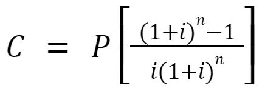

A amortização é outro conteúdo dentro de anuidades, mas dessa vez o objetivo é pagar um empréstimo de parcelas iguais, que foram distribuídas, retirando o juros em cima de cada parcela. Compreendendo melhor: o montante total do juros composto foi dividido em n parcelas para todas terem o mesmo valor. Acontece que não podemos retirar o mesmo juros de cada parcela pois tem algumas que serão pagas esse mês, outras que serão pagas daqui 5 meses. Por isso retiramos a taxa de juros elevada ao período da parcela. Como demonstra a imagem abaixo:
Parcelas da amortização, disponibilizada pela professora Dra. VALERIA ESPINDOLA LESSA, no material didático: MD1 - ANUIDADES, na página 5, disponível no SIGAA, para a turma de informática do segundo ano, de 2024, do IFRS, Campus Erechim.
Para a amortização, também usamos a fórmula de soma de uma PG, mas agora, teremos que fazer algumas modificações maiores.
C - Capital, o valor original da dívida;
P - Parcela, a parcela com o juros atribuído;
i - taxa de juros na forma de número decimal;
n - período de parcelas de acordo com a taxa(se a taxa for ao mês, cada parcela corresponde a um mês).
Há uma outra fórmula para calcular as parcelas, mas com essa fórmula também é possível calcular.
Abaixo segue exemplo: